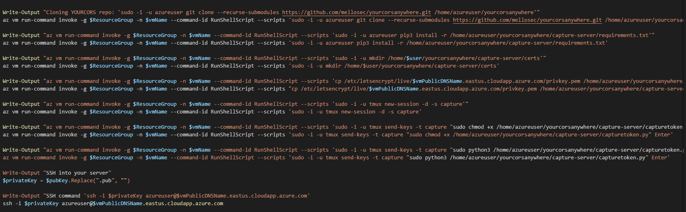

Putting it All Together
Welcome back to part 3 of this series where we developed a solution for serving a dynamic device code page and retrieving the token from the endpoint.
This let's us get arounds the 15 minute time-to-live that was bothering me so much. The first two Parts
Part 1 and
Part 2 saw us develop our proof-of-concept and get through the hurdles to having it run.
We touched briefly on the deployment of these servers and the scripts and I apologize for that, it's hard to decide when to go into what as we covered a bunch of topics on this project.
This article will go itno more detail on that and demonstrate deployment through the full attack chain for this setup, how to use it, etc..
Infrastructure-as-Code
Infrastrucutre-as-Code, or IaC, is writing repeatable deployable infrastructure as sets of scripts or configuration files.
The cloud age has ushered in a sea of powerful APIs into every providers heart and it's allowed engineers and admins to approach infrastructure in a different way.
There are many ways to do it but my preferred ways are a combination of powershell, terraform, ansible and various providers individual CLIs. Azure is a good example,
I'll use small powershell wrappers to automate terraform tasks and use ansible to do post-configuration. It was my introduction to coding and has saved me a HUGE amount of spend on cloud resources.
Having terraform/ansible combo configurations for most of my needs has been great. I can store the data in the cloud and spin up whatever I need and attach.
If I'm going to spend more than an hour troubleshooting something I'll often detach the public IP and volume, blow it away and attach them to the new one.
You keep your code in github and have version control, as well as a means to continuously deploy through Actions or Azure Devops (I'll show you it's awesome).
This project contains examples in the forms of powershell scripts for azure and aws that are easy for you to modify and make your own plus an eample of a terraform+ansible project you can use as well.
Deployment
Let's diagram and deploy our capture server, then our lure server, then we'll demonstrate.
This won't be an in depth powershell tutorial, I'm going to show you where you can make some edits and some gotchas that may pop up.
Here's where we ended up.
We started with CORS on both servers as we developed the concept, but reducing that to just the lure server behind a reverse-proxy was the best solution.
We reduced the size of the capture server to save costs and have the lure-server providing extra utility as an Open-Redirect for disguising urls.
If you're wondering why we don't capture the tokens behind Caddy: I don't want a single point of failure and decoupling phishing from capturing is worth it.
The capture server uses Azure's IP reputation and backs the LetsEncrypt cert to retrieve our tokens and our good categorized domain goes on AWS to host the lure.
Let's try the capture server first, since that's working already. We just need to make some edits for our custom stuff.
Capture Server
We touched on this briefly in the first couple of articles, it's an Azure VM that captures the tokens, deployed using powershell and Az Run-Command to configure it.

We still clone TokenTactics and TokenTacticsV2 like we did but we've added our cors repo and pointed the sections about the capture server to our version located in "yourcorsanywhere/capture-server/capturetoken.py.
It will create it's own LetsEncrypt certificate and we copy that now to our repo since we're serving with those certificates. I included ".pem" in the .gitignore to be safe, but don't make any commits from this server.
Consider it a one way repo, clone it, make your changes for the operation and use it temporarily. Don't push secrets, you get really big bills and none of the mined crypto. Trust me..
We then use tmux to create the session for the capture server. My friend showing me Tmux was a true gift, it's made my life so much easier.
You can log into your server and create a persistent session for each thing you want to run.
If your shell dies, it will still run until shutdown or closed, but it's not as bulky as running it as a true service.
For what we do it's perfect and the fact that it's scriptable is really cool. I've never tried it in an azure deployment so let's we what we get.

Deployed, but without tmux. Let's delete the entire resource group to clear out the resources, look for typos and re-deploy.
And Redeploy:
I love Az Run-Command, I wish AWS had an equivalent. If you can shell script or know powershell it makes deploying VMs and post-config a breeze.
AADInternals wouldn't import
It says succeeded, because it ran the command, not because the command itself was successful. You have to look through them a bit to find things. Comment out that section for now, we'll run those manually on the host after it deploys and fix them back here
There were some quotes, typos and variable issues I fixed, I just wanted to show you the basics of troubleshooting so you can modify and use this.
This one drove me a little crazy. You have to start powershell and install in the same command so it's in the same powershell session, if you try "pwsh" as one command and the "Install-Module" as two commands, i.e. like I tried "pwsh; Install-Module"
It wants the commands one by one.
"pwsh && Install-Module" wouldn't either, it can't transfer from bash to powershell like that, but I feel like someone like my friend Dave could make that work. He goes deep on bash and linux internals where I just love and use it. Sometimes we both have a project that's with some weird OS internal so I get to share my stuff about windows apis and learn about how the linux kernel works with packets. You need to pass the "-c" argument to tell it we want to start powershell and specify a command for powershell to run.
We got it working, we logged into the server and verify tmux session is active, but not serving flask.
To troubleshoot, let's try and run the command
We had python instead of Python3. Gets me all the time. Helps to be specific. We still ended up having trouble with sending the tmux command through run command. I'm okay with needing to start the capture session manually, I'll auto-shutdown/redeploy everyday anyway, but I'll put some time in trying to figure this out later on.
Lure Server
This was pretty straight forward, AWS makes it easy to deploy, as well, though, you can't just run commands on a VM. You have to supply a shell script in the form of user data:
Pass your access keys on the command line, it's very not secure, buyt secrets management is up to you, that's beyond the scope of these articles.
That will be a future article, though. We create a new SSH Keypair for this and write it to our SSH folder.
ProfileName and, Tags, UserDataScript are all yours to change. That AMI is the Id used by AWS for the ubuntu image in us-east-1.
Parameters passed to the aws cli as a hash table. Change "t2.nano" to "t2.micro" if you find this machine needs more juice.
I'm trying to save as much money as we can, but I noticed when we had everything running during development the lure-server was starting tp feel it.
That's the beauty of I-a-C, though, just blow it up and re-deploy.
Security Group Rules
We get the instance by using our Tags, the Name LuridArray, and retrieve it's security group. We then open our we bports to the world, then get our public IP and store it in a varialbe to create the SSH rule for your current IP. This way your SSH isnt exposed to the world. We'll add this to the Azure VM deploy, too.

Worked like a charm. The deploy script is the next step, make sure it's doing what it should.
We're going off the default AWS username here and you have to set your domain for the certbot portion to get your SSL cert.
Caddy has automatic letsencrypt enrollment, I think that may be a good thing to try. We know certbot works but with some manual intervention on our part. I wonder how caddy does it's thing.
Very cool. Right now, we're providing the domain but overriding this activation feature using our own certificates, which we specified in the Caddyfile:
We also developed this on a blowaway machine I manage with ansible, so our username is going to need to change. We could standardize the username between both projects or do like "capture" and "lure" instead of platform specific.
It's a little much for this article, but the way I see doing CORS and Capture in the future is a single Terraform configuration file with both servers and respective DNS providers. We would add the DNS record at the VMs creation.
This would work like the azure capture server, we could use caddy to enroll based on the AWS DNS information. I want to use our custom domain certificate, though. We still end up in a situation where we need the IP address to make the record beofre we can continue with the script.
It's not a big deal, it can he handled similar to this:
That's not good enough for me, though. Regardless, setting the record and letting Caddy handle it's own certificates is probably the way to go, rather than us scripting out the copying of the certs like we did here and for capture.
Just occurred to me that we probably don't need to use "sudo" to copy those certs, and therefore probably don't have to "chown" those for the regular user either.
So our way could be better, and Caddy's way looks really simple. We could try including a caddyfile with the domain in the deploy script, or repository.
There are ways we can do this using specific providers and plugins for caddy but, we have to compromise with a manual step. After "lure-setup.sh" runs in the deploy phase, we'll have our public IP and can set up our record. With record in place, we'll run a script manually to setup caddy. Remove caddy from "lure-setup.sh" and create a Caddyfile and new script "Caddy-setup.sh" in "lure-server"